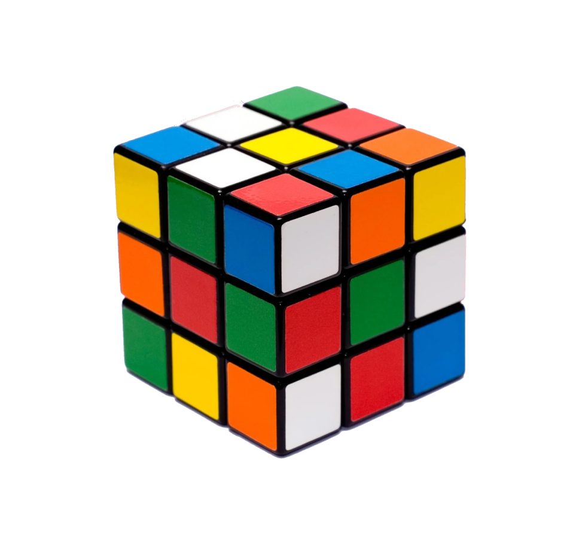

Rubik's Cube
The Rubik's Cube, invented by Ernő Rubik, became an international sensation in 1980. This 3D combination puzzle challenges players to align its six faces so that each displays a single color. Known for its vibrant colors and seemingly endless combinations, it quickly became a symbol of intellectual curiosity and creative problem-solving. The Rubik's Cube is not only a beloved toy but also an enduring icon of 1980s pop culture.